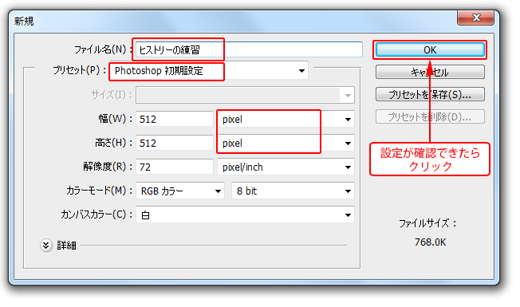
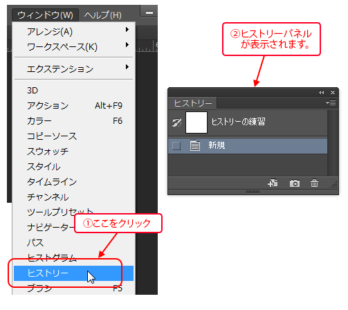
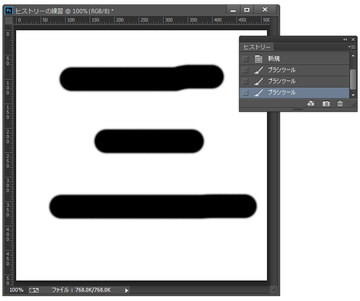
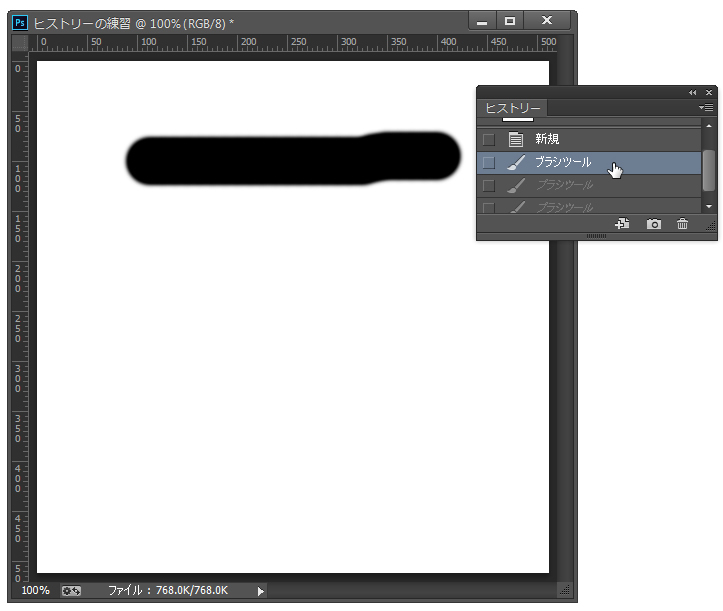
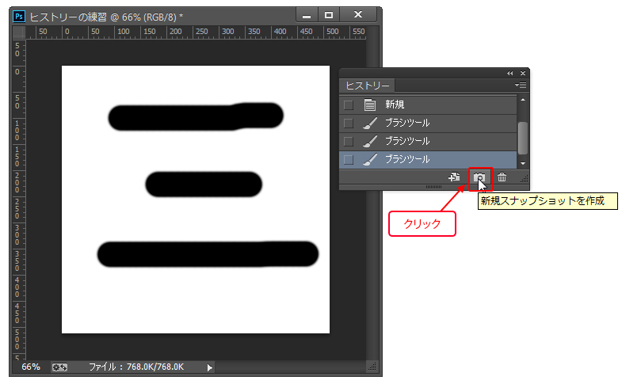
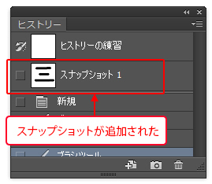
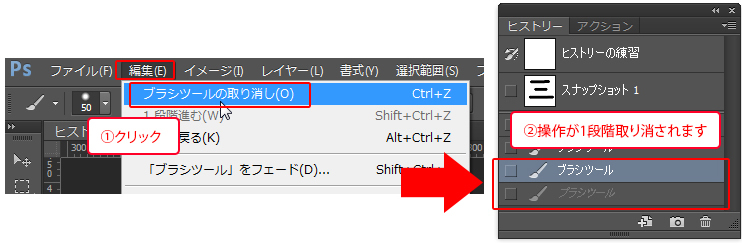
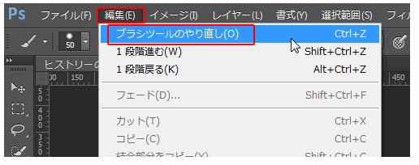
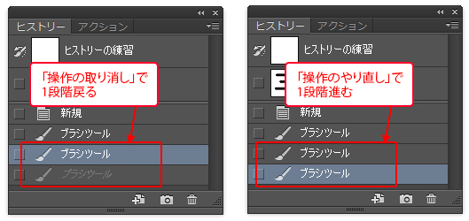
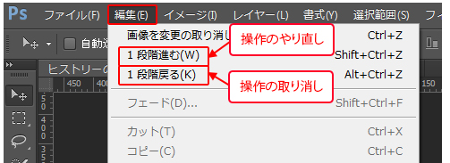

本項では、 ヒストリーパネルの使い方と操作の取り消し・やり直しを学習します。
[ヒストリーパネル]とは、Photoshop上での作業を画像として一時記録するパネルです。
[ヒストリーパネル]を使えば、操作を取り消して以前の状態に戻したり、
過去に作業した画像をもとに加工を加えることのできる
[ヒストリーブラシツール]などを使用することもできます。
※[ヒストリーブラシツール]については第6章で学習します。
まず、新規ファイルを作成します。
ファイル名を「ヒストリーの練習」とし、
プリセットより「Photoshop初期設定」を選択し、
単位を「pixel（ピクセル）」に設定します。

新規ファイルが開いたら、メニューバーの[ウィンドウ]-[ヒストリー]をクリックし
[ヒストリーパネル]を表示させます。

[ヒストリーパネル]で記録できる作業のステップ数には限界があり、
初期設定では最大で「20回」まで記憶され、一覧表示されます。
ちなみに、ヒストリーに記録されるステップを「ヒストリー画像」と呼びます。
では、実際に[ヒストリーパネル]で操作が記録される様子を確認しましょう。
画像内を[ブラシツール]で数回ドラッグしてみます。
[ヒストリーパネル]を確認すると、そのヒストリー画像が記録されています。
ブラシでの1ストローク（1回のドラッグ）でヒストリーが1つ記録されます。

表示されている、「ヒストリー画像」のうち、いずれかをクリックします。
どの「ヒストリー画像」でもかまいません。
クリックした「ヒストリー画像」の状態に画像が戻ります。

ヒストリーパネルには、設定された数のヒストリー画像しか記憶できません。
設定数を超えると、古いヒストリー画像から順に削除されていきます。
そのため、一時的に画像を残しておきたい場合は「スナップショット」を使用します。
スナップショットは画像の一時的なコピーを作成します。
スナップショットを使用すると、いつでもコピーされた画像に戻ることができます。
いずれかの「ヒストリー画像」を選択した状態で、
[ヒストリーパネル]下部の[新規スナップショットを作成]をクリックします。

ヒストリーパネルに「スナップショット1」が追加されます。
今後はファイルを閉じるまで、
「スナップショット1」の画像は削除されることがありませんので、
この状態にいつでも戻ることができます。

[ヒストリーパネル]を使用する以外にも、
Illustratorのように[編集]メニューから操作の「取り消し」や「やり直し」が可能です。
メニューバーの[編集]-[○○の取り消し]を選択します。
※「○○」には直前に実行した操作名が入ります。
[ヒストリーパネル]を確認すると、操作が1段階取り消されて戻っていることが分かります。

再度、[編集]メニューを確認すると、先ほどの[○○の取り消し]が
[○○のやり直し]に変化しています。

操作の「やり直し」を選択すると、取り消しをする1段階前の状態に進みます。

Illustratorなどの他のソフトでは、
「取り消し」と「やり直し」が別に用意され、それぞれが繰り返し使用できますが、
Photoshopでは1段階だけを「取り消し」「やり直し」が切り替えられます。
操作を複数段階取り消したい場合は、メニューバーの[編集]-[1段階戻る]を、
複数段階やり直したい場合は、メニューバーの[編集]-[1段階進む]を選択します。

以上でこの項の学習は終了です。
ファイルは閉じて次の項へ進んでください。